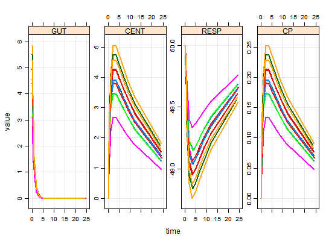
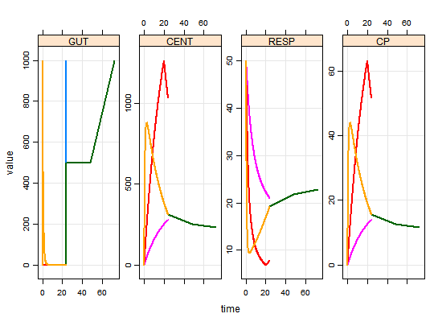
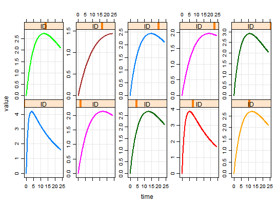

Example input data sets
Example input data sets
data(exidata) data(extran1) data(extran2) data(extran3) data(exTheoph) data(exBoot)
Details
-
exidataholds individual-level parameters and other data items, one per row -
extran1is a "condensed" data set -
extran2is a full dataset -
extran3is a full dataset with parameters -
exTheophis the theophylline data set, ready for input intomrgsolve -
exBoota set of bootstrap parameter estimates
Examples
#> Warning: cannot open compressed file 'C:\Users\devin\Documents\Repos\mrgsolve/project/housemodel.RDS', probable reason 'No such file or directory'#> Error in gzfile(file, "rb"): cannot open the connection#> Model: demo.cpp #> Dim: 132 x 6 #> Time: 0 to 24.65 #> ID: 12 #> ID time GUT CENT RESP CP #> [1,] 1 0.00 4.0200000 0.000 50.00 0.00000 #> [2,] 1 0.25 2.9045600 1.108 49.94 0.05541 #> [3,] 1 0.57 1.9160809 2.071 49.77 0.10353 #> [4,] 1 1.12 0.9373316 2.978 49.49 0.14891 #> [5,] 1 2.02 0.2909168 3.477 49.23 0.17383 #> [6,] 1 3.82 0.0280233 3.425 49.15 0.17124 #> [7,] 1 5.10 0.0053071 3.234 49.19 0.16171 #> [8,] 1 7.03 0.0004317 2.941 49.26 0.14706plot(out)## Condensed: mrgsolve fills in the observations data(extran1) out <- mod %>% data_set(extran1) %>% mrgsim out#> Model: demo.cpp #> Dim: 1214 x 6 #> Time: 0 to 72 #> ID: 5 #> ID time GUT CENT RESP CP #> [1,] 1 0.0 0.0 0.0 50.00 0.00 #> [2,] 1 0.0 1000.0 0.0 50.00 0.00 #> [3,] 1 0.1 878.1 121.6 47.92 6.08 #> [4,] 1 0.2 771.1 227.8 44.07 11.39 #> [5,] 1 0.3 677.1 320.4 39.90 16.02 #> [6,] 1 0.4 594.5 401.1 35.89 20.06 #> [7,] 1 0.5 522.0 471.4 32.23 23.57 #> [8,] 1 0.6 458.4 532.5 28.96 26.63plot(out)## Add a parameter to the data set stopifnot(require(dplyr)) data <- extran1 %>% distinct(ID) %>% select(ID) %>% mutate(CL=exp(log(1.5) + rnorm(nrow(.), 0,sqrt(0.1)))) %>% left_join(extran1,.)#>data#> ID amt cmt time addl ii rate evid CL #> 1 1 1000 1 0 3 24 0 1 1.225509 #> 2 2 1000 2 0 0 0 20 1 1.476486 #> 3 3 1000 1 0 0 0 0 1 1.385331 #> 4 3 500 1 24 0 0 0 1 1.385331 #> 5 3 500 1 48 0 0 0 1 1.385331 #> 6 3 1000 1 72 0 0 0 1 1.385331 #> 7 4 2000 2 0 2 48 100 1 1.726545 #> 8 5 1000 1 0 0 0 0 1 3.585166 #> 9 5 5000 1 24 0 0 60 1 3.585166#> Model: demo.cpp #> Dim: 1214 x 7 #> Time: 0 to 72 #> ID: 5 #> ID time CL GUT CENT RESP CP #> [1,] 1 0.0 1.226 0.0 0.0 50.00 0.00 #> [2,] 1 0.0 1.226 1000.0 0.0 50.00 0.00 #> [3,] 1 0.1 1.226 878.1 121.6 47.92 6.08 #> [4,] 1 0.2 1.226 771.1 227.8 44.07 11.39 #> [5,] 1 0.3 1.226 677.1 320.4 39.90 16.02 #> [6,] 1 0.4 1.226 594.5 401.1 35.89 20.06 #> [7,] 1 0.5 1.226 522.0 471.4 32.23 23.57 #> [8,] 1 0.6 1.226 458.4 532.5 28.96 26.63plot(out)## idata data(exidata) out <- mod %>% idata_set(exidata) %>% ev(amt=100,ii=24,addl=10) %>% mrgsim plot(out, CP~time|ID)